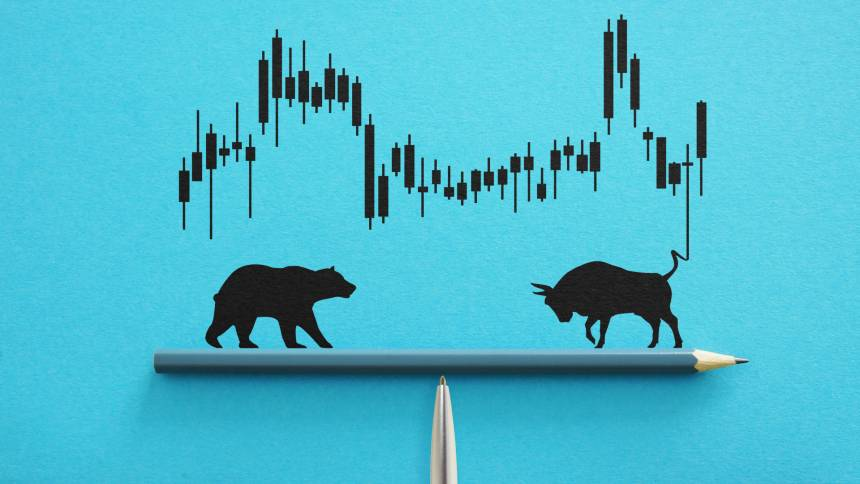
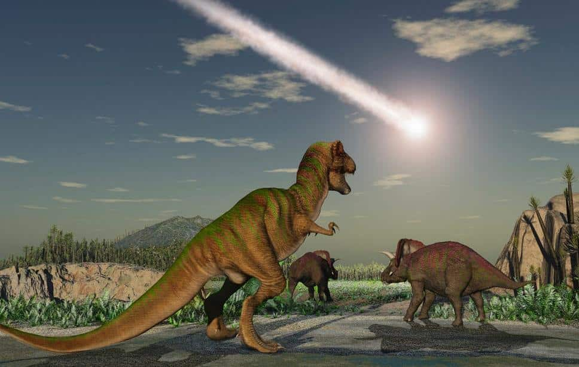
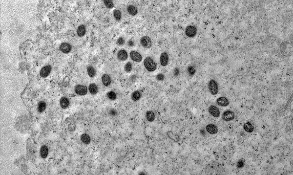

Inicio📍
Que esta sexta-feira à noite seja o começo de um final de semana revigorante. Aproveite para relaxar, curtir e se preparar para momentos especiais. 🎉

Celebre suas conquistas da semana e prepare-se para criar novas histórias amanhã...
Economia💰
Mercados Globais em Alta com a Desaceleração da Recessão nos EUA e Dados Positivos do IBC-Br
Em um cenário onde a economia global enfrenta desafios significativos, a notícia de que a recessão nos Estados Unidos está perdendo força é um sopro de otimismo para investidores e analistas econômicos. Segundo o relatório divulgado pela ADVFN, os mercados mundiais avançaram com indicadores que sugerem uma possível recuperação da maior economia do mundo.
Os índices futuros americanos operaram em alta, impulsionados por uma série de dados encorajadores que incluem desde a inflação até os pedidos de auxílio-desemprego e vendas no varejo. Esses indicadores serviram para tranquilizar os investidores, dissipando temores de uma recessão prolongada e alimentando expectativas de que o Federal Reserve (Fed) poderá anunciar um corte de juros em breve, o primeiro em quatro anos e meio.
Na Europa, o sentimento positivo também se fez presente, com os índices acionários majoritariamente em alta após os dados favoráveis dos EUA. O índice pan-europeu Stoxx 600 registrou um avanço, caminhando para assegurar seu melhor desempenho semanal desde maio. A zona do euro viu seu superávit comercial ajustado aumentar em junho, enquanto as vendas no varejo do Reino Unido apresentaram crescimento, embora abaixo do esperado.
No setor corporativo, destaca-se a empresa de biotecnologia dinamarquesa Bavarian Nordic, cujas ações subiram expressivamente após a Organização Mundial da Saúde declarar a doença viral Mpox como uma emergência de saúde pública de importância internacional. Outro ponto notável foi a vitória judicial da empresa Bayer envolvendo o herbicida Roundup, o que resultou em um aumento significativo no valor de suas ações.
Na Ásia, o otimismo seguiu o mesmo ritmo, com as bolsas fechando em alta, lideradas pelo índice japonês Nikkei, que teve um salto notável, encerrando a semana com um ganho impressionante, o maior desde abril de 2020.
O relatório da ADVFN também menciona dados relevantes do Índice de Atividade Econômica do Banco Central (IBC-Br), que é um indicador importante para avaliar o pulso da economia brasileira. Embora os detalhes específicos não tenham sido divulgados no resumo, é possível inferir que os dados contribuíram para o clima de otimismo nos mercados.
Este panorama sugere que, apesar das incertezas que ainda rondam a economia global, há sinais de resiliência e potencial de recuperação. Investidores e analistas permanecem atentos aos próximos movimentos dos bancos centrais e aos indicadores econômicos que seguirão moldando o cenário financeiro mundial.
Para mais informações detalhadas e análises aprofundadas, acesse o relatório completo da ADVFN.
Ciência🪐
A Extinção dos Dinossauros: Um Asteroide do Sistema Solar Externo
A extinção dos dinossauros, um dos eventos mais cataclísmicos da história da Terra, tem intrigado cientistas e leigos por décadas. Recentemente, um estudo publicado na revista Science trouxe novas evidências que podem finalmente esclarecer a origem do impactador de Chicxulub, o corpo celeste responsável por este evento de extinção em massa ocorrido há 66 milhões de anos.
O estudo, liderado pelo Dr. Mario Fischer-Gödde da Universidade de Colônia, na Alemanha, analisou amostras de rutênio - um metal raro na crosta terrestre, mas abundante em rochas espaciais - depositadas por objetos gigantes em crateras da superfície da Terra. As análises revelaram que o impactador de Chicxulub era um tipo raro de asteroide carbonáceo, formado muito além de Júpiter, no chamado Sistema Solar externo.
Esta descoberta é significativa por várias razões. Primeiramente, põe fim a uma longa controvérsia sobre a natureza do impactador, confirmando que ele não se originou no cinturão principal de asteroides, localizado entre as órbitas de Marte e Júpiter. Além disso, oferece pistas sobre a origem do asteroide, que pode ser útil na tentativa de prever e tentar evitar futuros eventos catastróficos semelhantes.
Os cientistas realizaram medições adicionais de outros cinco impactos, que mostraram que as crateras foram provocadas por asteroides de silicato, vindos de nossa vizinhança solar. No entanto, o impactador de Chicxulub trouxe consigo aminoácidos, nucleobases e outros compostos necessários para a construção da vida, sugerindo que asteroides como este podem ter desempenhado um papel crucial na origem da vida na Terra.
O estudo também destaca a importância de entender as origens de objetos como o impactador de Chicxulub para avaliar adequadamente os perigos futuros. Com a tecnologia atual, é possível impactar asteroides mais próximos à Terra, como demonstrado pela missão DART, que colidiu uma nave com o asteroide Dimorphos. Este tipo de pesquisa e missão espacial não só ajuda a compreender melhor a história do nosso planeta, mas também a proteger a vida na Terra de ameaças extraterrestres.
Em resumo, o estudo do Dr. Fischer-Gödde e sua equipe abre novas portas para o entendimento da extinção dos dinossauros e a formação do Sistema Solar. Ele também reforça a ideia de que eventos cósmicos, como a queda de asteroides, não são apenas destrutivos, mas também podem ser fundamentais para a evolução da vida como a conhecemos.
Saúde🧬
Eficácia do Antiviral Tecovirimat Contra Mpox
Recentemente, uma análise inicial de um estudo clínico revelou que o antiviral tecovirimat, empregado no tratamento da mpox, não conseguiu reduzir a duração das lesões em crianças e adultos infectados com o clado 1 do vírus, considerado a variante mais letal e responsável pelo surto atual na República Democrática do Congo (RDC). Este resultado preliminar foi divulgado pelos National Institutes of Health (NIH) dos Estados Unidos.
Apesar de não diminuir a duração das lesões, observou-se uma taxa de mortalidade menor entre os participantes do estudo, de 1,7%, em comparação com a taxa de mortalidade geral por mpox na RDC, que é de 3,6%. Isso sugere que o internamento hospitalar e os cuidados de suporte de alta qualidade podem levar a melhores desfechos de saúde para os pacientes com mpox.
A diretora do Instituto Nacional de Alergia e Doenças Infecciosas (NIAID), Jeanne Marrazzo, expressou decepção com os resultados, mas enfatizou a importância dessas descobertas para direcionar a necessidade de identificar outros candidatos terapêuticos para a mpox. O NIH reitera seu compromisso em desenvolver intervenções seguras e eficazes, incluindo tratamentos e vacinas, para aliviar o impacto da mpox na África Central e lidar com a forma mais branda do vírus que circula globalmente.
O estudo PALM007, iniciado em outubro de 2022 pelo NIAID em parceria com o Institut National de Recherche Biomédicale (INRB) da RDC, inscreveu 597 pessoas com diagnóstico laboratorial confirmado de mpox. Os participantes foram aleatoriamente designados para receber tecovirimat ou placebo e permaneceram hospitalizados por no mínimo 14 dias para monitoramento da segurança e resolução das lesões de mpox.
Esses achados são um passo crucial para entender a eficácia dos tratamentos disponíveis contra a mpox e ressaltam a necessidade contínua de pesquisa e desenvolvimento de novas terapias para combater essa doença. A comunidade científica global continua a trabalhar incansavelmente para encontrar soluções que possam conter a disseminação da mpox e melhorar a qualidade de vida dos afetados.
Extra✨
Sexta-feira à noite é o momento ideal para relaxar e dar início a um final de semana incrível. Aqui estão algumas sugestões para aproveitar sua noite:
- Desligue-se do trabalho 📅: Finalize suas tarefas da semana e desconecte-se das responsabilidades profissionais. Comece o final de semana com a mente tranquila.
- Faça um jantar especial 🍽️: Prepare ou peça uma refeição que você adora. Comer algo delicioso pode ser a melhor maneira de começar a relaxar.
- Encontre amigos ou familiares 👫: Sexta-feira à noite é perfeita para socializar. Convide alguém para uma conversa, jantar ou um passeio.
- Desfrute de um filme ou série 🎬: Escolha algo divertido ou inspirador para assistir e aproveite a noite no conforto do lar.
- Relaxe e curta o momento 📵: Desligue-se das redes sociais e foque em você. Aproveite cada minuto da sua noite de sexta-feira.